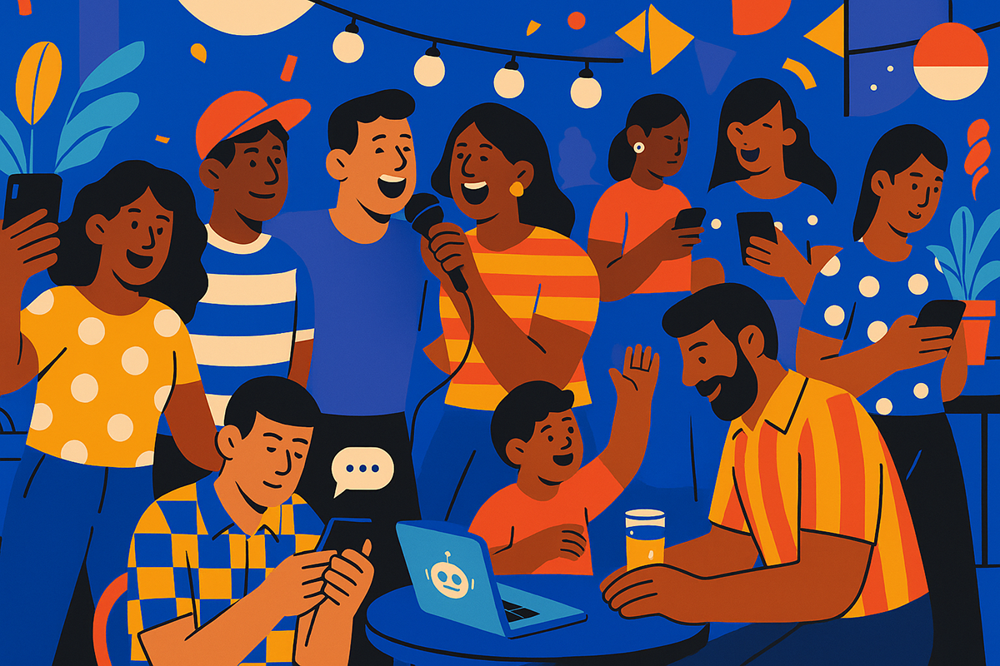
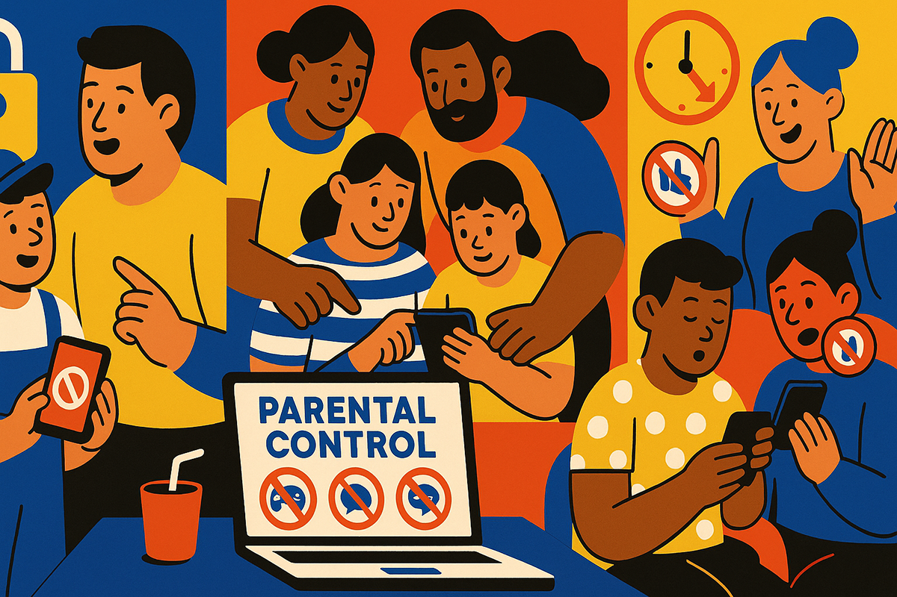
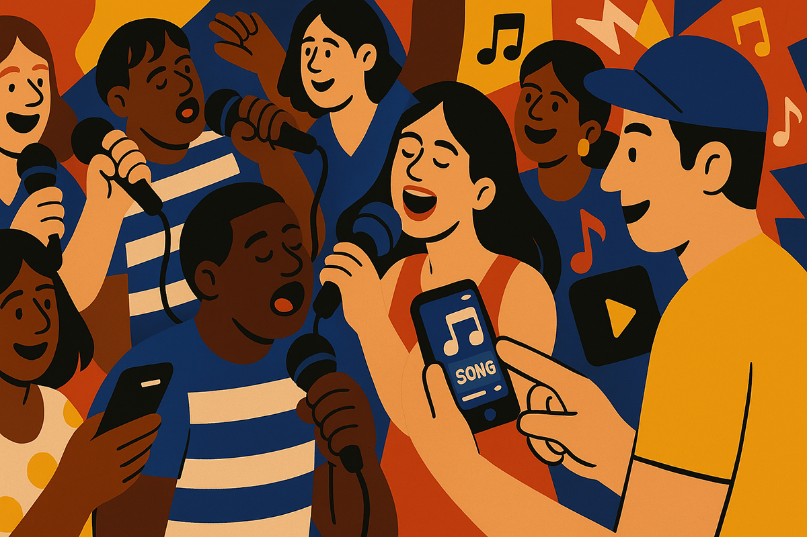
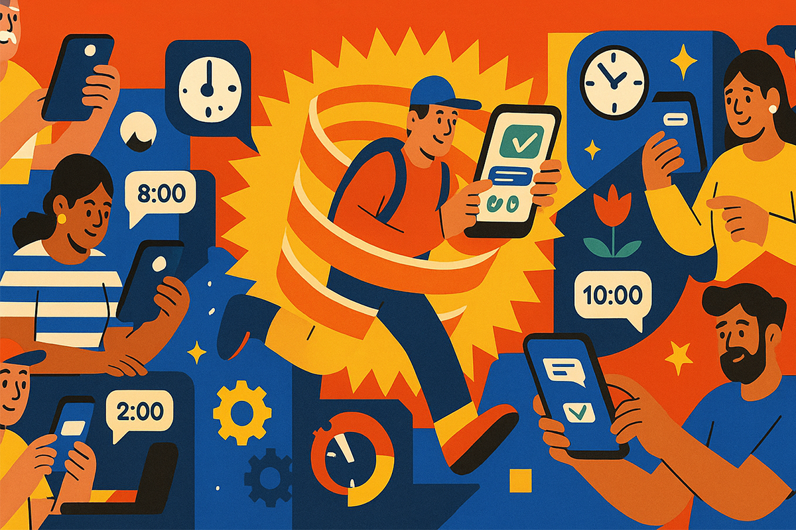

¿Qué tienen en común cantar mal, salir en una foto y programar un mensaje?
Spoiler: mucho más de lo que crees
Spoiler: mucho más de lo que crees

¿Tienes un iPhone o un Android? Entonces seguro estás familiarizado con esas notificaciones que te avisan de una nueva actualización del sistema. Si eres como yo, probablemente eliges “actualizar durante la noche” y te olvidas del tema mientras duermes.
Tanto iOS como Android renuevan sus sistemas operativos una vez al año: Apple suele hacerlo en septiembre cuando lanza cada nuevo Iphone, mientras que Android lanza sus actualizaciones principales durante el segundo semestre. Después, ambos sistemas publican mejoras menores cada 6 semanas aproximadamente.
Lo interesante es que estas actualizaciones no solo corrigen errores: muchas veces traen funciones nuevas que pueden hacer tu vida más fácil. Acá, te contamos cuáles son las novedades más útiles para que puedas aprovechar al máximo tu teléfono y convertirlo en un aliado de la vida diaria.

Desde hace un tiempo, iOS cuenta con herramientas para controlar el tiempo en pantalla. En la configuración del teléfono, puedes establecer tiempos de uso máximos para apps y cuando se supera ese tiempo, el sistema lo notifica. Si quieres seguir navegando, tienes que poner un código para desbloquear el tiempo.
Lo interesante es que, con el control parental, los padres pueden gestionar estos límites. ¿La novedad? Ahora el iPhone envía una alerta a los padres cuando sus hijos ingresan el código para seguir usando el teléfono: una señal de que la contraseña era demasiado fácil de adivinar. Una función muy útil para saber cuándo actualizar el código, o al menos tener una conversación sobre límites.

Aplicaciones como Shazam, que iPhone incorporó a su panel de control hace poco, existen desde hace años y se han convertido en una de las más conocidas para reconocer canciones. Su funcionamiento es simple: escucha un fragmento de audio y lo compara con su base de datos para identificar la canción. El problema es que esta tecnología funciona solo con grabaciones, por lo que si cantas a capella, lo más probable es que la app no arroje ningún resultado.
Google detectó esto y respondió con una solución ingeniosa: un ícono de micrófono en su buscador que permite identificar canciones, incluso si solo las tarareas o silbas. Gracias al uso de machine learning, esta herramienta puede reconocer melodías, aunque no cantes afinado ni mantengas el tono perfecto. Solo necesitas acercarte y la app se encargará de ofrecerte una lista con las posibles canciones que se parecen.

En el mundo laboral es muy común programar un mail o mensaje para el día siguiente. Es una señal de respeto por los horarios y por la vida fuera del trabajo. Ahora, ¿por qué no lo hacemos en nuestra vida personal?
Con iOS 18, ahora puedes programar mensajes de iMessage para cuando tú quieras. ¿Cómo funciona? Escribe el mensaje, toca el símbolo de + y selecciona “enviar más tarde”. Puedes elegir cualquier fecha y hora dentro de los próximos 14 días. Así, te aseguras de no despertar a nadie o interrumpir una reunión con algo que puede esperar.
¿Quién diría que actualizar el sistema ya no es solo cuestión de seguridad y corrección de errores? Ahora también se trata de cantar mal, llegar a salir en la foto y no mandar mensajes a las 2 AM por error.
Ya sabes: la próxima vez que tu teléfono te pida actualizar, no lo ignores. Tu yo del futuro te lo va a agradecer.
 Tecnología
TecnologíaSi eres como yo y revisas TikTok e Instagram constantemente, te habrás dado cuenta de que estas redes son casi como un experimento social.
 Tecnología
TecnologíaHablamos mucho de inteligencia artificial. La tenemos integrada en nuestra vida, nos ayuda en nuestros trabajos y le preguntamos cosas de…
 Tecnología
TecnologíaDurante años hemos pensado en la inteligencia artificial como algo súper frío: servidores gigantes, computadores procesando datos y…